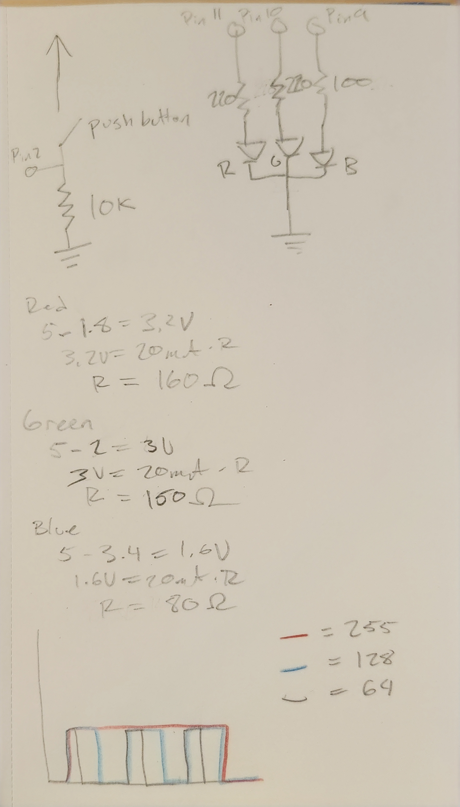
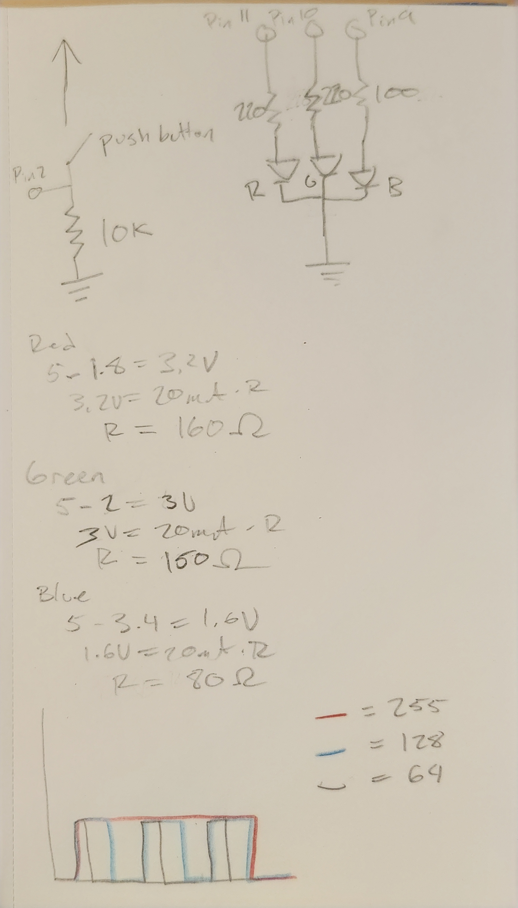
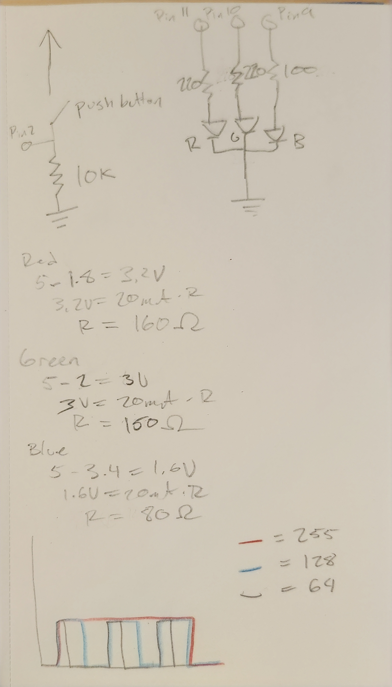

Here is all the documentation for assignment 2:

I used a 10k ohm resistor for the button to avoid a short circuit when the button is pressed.
A high value like 10k ohms is more power efficient and helps the button understand when it's at the LOW state.
Using a 220 ohm resistor for the red and green LEDs means they draw 14.5mA and 13.6mA respectively.
The blue LED will draw 34mA with a 100 ohm resistor.
Adding these together and dividing 1200mAh by the sum = 19.3 hours
Here is the code for assignment 2:
// constants won't change. They're used here to set pin numbers:
const int buttonPin = 2; // the number of the pushbutton pin
const int redPin = 11; // the number of the red LED pin
const int grnPin = 10; // the number of the green LED pin
const int bluPin = 9; // the number of the blue LED pin
// variables will change:
int buttonState = 0; // variable for reading the pushbutton status
void setup() {
// initialize the LED pins as outputs:
pinMode(redPin, OUTPUT);
pinMode(grnPin, OUTPUT);
pinMode(bluPin, OUTPUT);
// initialize the pushbutton pin as an input:
pinMode(buttonPin, INPUT);
}
void loop() {
// read the state of the pushbutton value:
buttonState = digitalRead(buttonPin);
// check if the pushbutton is pressed. If it is, the buttonState is HIGH:
if (buttonState == HIGH) {
//fade in from max to min in increments of 2 points:
for (int fadeValue = 0; fadeValue <= 50; fadeValue += 2) {
// sets the value (range from 0 to 50):
analogWrite(redPin, fadeValue);
// wait for 100 milliseconds to see the dimming effect
delay(100);
}
//fade in from max to min in increments of 2 points:
for (int gfadeValue = 0; gfadeValue <= 50; gfadeValue += 2) {
// sets the value (range from 0 to 50):
analogWrite(grnPin, gfadeValue);
// wait for 100 milliseconds to see the dimming effect
delay(100);
}
//fade out from max to min in increments of 5 points:
for (int fadeValue = 50; fadeValue >= 0; fadeValue -= 5) {
// sets the value (range from 0 to 50):
analogWrite(redPin, fadeValue);
// wait for 100 milliseconds to see the dimming effect
delay(100);
}
//fade in from max to min in increments of 2 points:
for (int bfadeValue = 0; bfadeValue <= 25; bfadeValue += 2) {
// sets the value (range from 0 to 50):
analogWrite(bluPin, bfadeValue);
// wait for 100 milliseconds to see the dimming effect
delay(100);
}
//fade out from max to min in increments of 5 points:
for (int gfadeValue = 50; gfadeValue >= 0; gfadeValue -= 5) {
// sets the value (range from 0 to 50):
analogWrite(grnPin, gfadeValue);
// wait for 100 milliseconds to see the dimming effect
delay(100);
}
//fade out from max to min in increments of 5 points:
for (int bfadeValue = 25; bfadeValue >= 0; bfadeValue -= 5) {
// sets the value (range from 0 to 50):
analogWrite(bluPin, bfadeValue);
// wait for 100 milliseconds to see the dimming effect
delay(100);
}
} else {
// turn LED off:
digitalWrite(redPin, LOW);
}
}